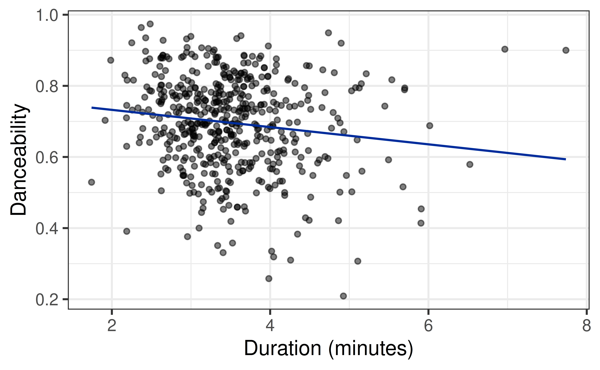
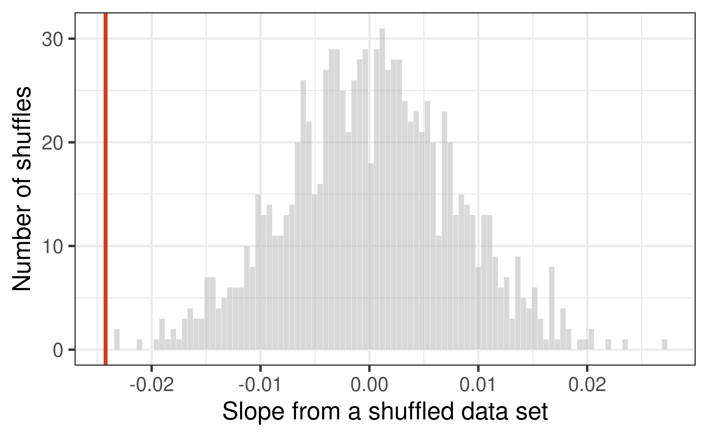
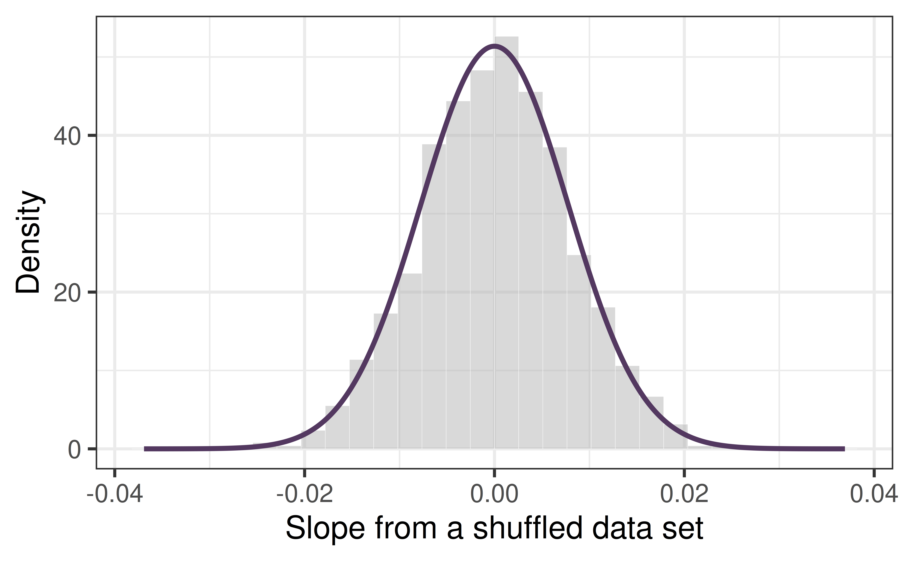
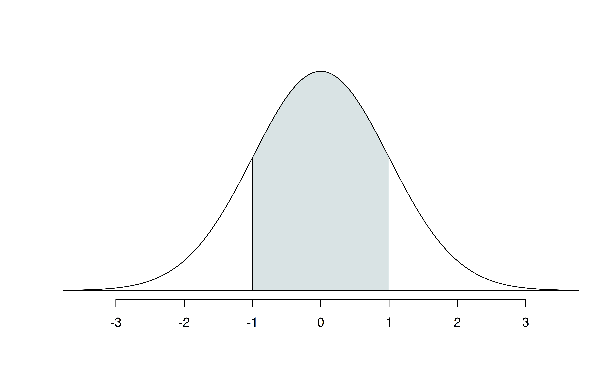
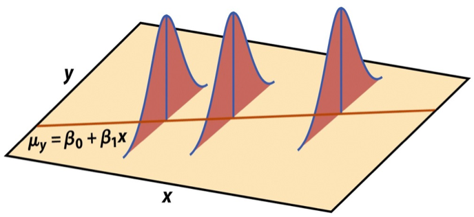
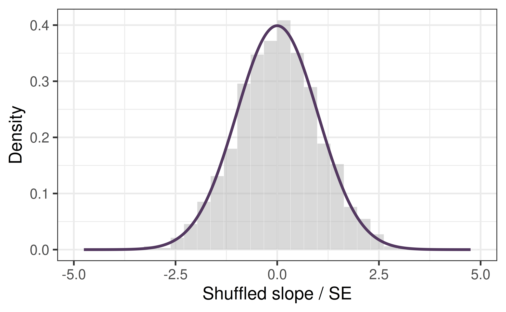
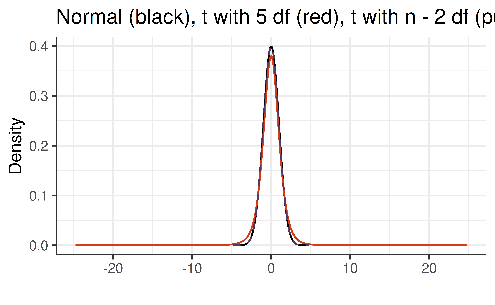
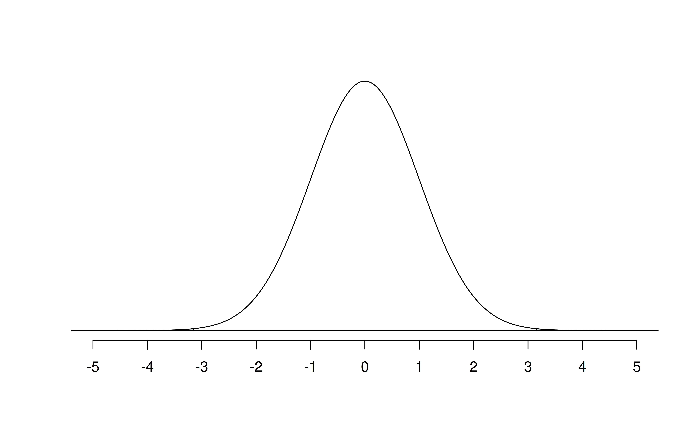

Hypothesis Tests and Confidence Intervals for the Slope
From shuffling to the normal distribution
Prof. Eric Friedlander
Last time
- Our question was “does island explain more variation than chance?”
- We chose PRE as our statistic, shuffled the response to break any relationship, and built a null distribution.
- The p-value was the share of shuffles at least as extreme as our real data.
Today: how do we choose a statistic that fits our question, and can we skip the shuffling by recognizing the shape of the null distribution?
Topics
- Choose a test statistic that captures a research question.
- Build its null distribution, and notice that it looks normal.
- Learn about the normal distribution and use it to compute p-values.
- Standardize the slope to get a \(t\) statistic.
- Ask “what if we don’t assume no relationship?” and build confidence intervals.
Activity
Complete AE-10 then switch up roles and complete Exercises 1-2 of the activity below.
Step 1: Choose a test statistic
Danceability on Spotify
We have data on 508 of the most popular songs on Spotify (track_popularity >= 80).

Research question: Are longer songs more or less danceable? What does the picture suggest?
Fitting the model
| term | estimate | std.error | statistic | p.value |
|---|---|---|---|---|
| (Intercept) | 0.7809 | 0.0275 | 28.3506 | 0.0000 |
| duration_min | -0.0242 | 0.0077 | -3.1510 | 0.0017 |
Our slope is \(\hat{\beta}_1 =\) -0.024: each extra minute is associated with a 0.024 decrease in danceability. But is it real, or could shuffling produce a slope this big?
Choosing a statistic
In Lesson 10, our question was about how much variation a model explains, so we used PRE.
For each research question, which statistic would you compute from the data?
- Do men and women have different average ages at death?
- Does island, a three-level variable, explain more variation in age at death than chance?
- Are longer songs more or less danceable?
- Is there any linear relationship between a song’s loudness and its danceability?
The test statistic should capture the research question. Questions about a relationship between two variables are about the slope, so our statistic is \(\hat{\beta}_1\).
Hypotheses
Null hypothesis: there is no linear relationship between duration and danceability.
\[H_0: \beta_1 = 0\]
Alternative hypothesis: there is a linear relationship.
\[H_A: \beta_1 \neq 0\]
- \(\hat{\beta}_1\) is the slope in our sample. What is \(\beta_1\)?
- How would the alternative change if our question were “Are longer songs less danceable?”
Step 2: What is the null distribution of our statistic?
Shuffling again
Before I run this: if I shuffle danceability 1000 times and compute the slope each time, what shape will the histogram have? Where will it be centered? Unlike PRE, can the statistic be negative?
The null distribution of \(\hat{\beta}_1\)

What is the shape? Where is the center? Where does our real slope (red line) land?
The simulation p-value
We want a two-sided p-value because \(H_A: \beta_1 \neq 0\): count shuffles at least as far from 0 as ours, in either direction.
Why did we only look at one tail with PRE but need both tails here?
The histogram is symmetric, bell-shaped, and centered at 0. We’ve seen that shape before…
The normal distribution
Meet the normal distribution

A normal curve with mean 0 and SD = 0.00777 (the SD of our shuffles) is a great fit.
Normal distribution facts
A normal distribution \(N(\mu, \sigma)\) is determined by two numbers: a center \(\mu\) and a spread \(\sigma\).

- About 68% of values are within 1 SD of the center
- About 95% are within 2 SD
- About 99.7% are within 3 SD
Probabilities from the normal curve
pnorm(q, mean, sd) gives the area to the left of q.
[1] 0.8413447[1] 0.9544997Our slope is -0.024 and the SD of the null distribution is 0.00777. About how many SDs from 0 is it? Without computing anything, would you guess a p-value above or below 0.05?
p-value from the normal curve
Simulation p-value: 0.001. Normal p-value: 0.0018.
If we know the null distribution is normal, centered at 0, all we need is its SD. Can we get that without shuffling?
The standard error
Standard error of \(\hat{\beta}_1\)
The SD of the null distribution of \(\hat{\beta}_1\) is called the standard error, \(SE_{\hat{\beta}_1}\). It quantifies the sampling variability in the slope, and there’s a formula for it:
\[ SE_{\hat{\beta}_1} = \frac{\hat{\sigma}_\epsilon}{\sqrt{(n-1)s_X^2}}, \qquad \hat{\sigma}_\epsilon = \sqrt{\frac{\sum_{i=1}^n (y_i - \hat{y}_i)^2}{n-2}} \]
- \(SE_{\hat{\beta}_1}\): standard deviation of \(\hat{\beta}_1\)
- \(\hat{\sigma}_\epsilon\): average size of error (standard deviation of residuals)
Standard error of \(\hat{\beta}_1\)
| term | estimate | std.error | statistic | p.value |
|---|---|---|---|---|
| (Intercept) | 0.7809197 | 0.0275451 | 28.350605 | 0.0000000 |
| duration_min | -0.0242318 | 0.0076903 | -3.150955 | 0.0017237 |
[1] 0.00776646| SD of shuffled slopes | std.error from lm |
|
|---|---|---|
| \(SE_{\hat{\beta}_1}\) | 0.007766 | 0.00769 |
The two agree. What do you think makes \(SE_{\hat{\beta}_1}\) smaller: a bigger \(n\), more spread in \(X\), or less scatter around the line?
Why this works: the model
\[ \begin{aligned} Y &= \beta_0 + \beta_1 X + \epsilon, \qquad \epsilon \sim N(0, \sigma_\epsilon^2) \end{aligned} \]

- Errors are independent and normal
- Same spread \(\sigma_\epsilon\) at every \(X\)
- \(\hat\sigma_\epsilon\) is the regression standard error: the typical distance from the line
We divide by \(n-2\) because we estimated two parameters (\(\beta_0\) and \(\beta_1\)): \(n-2\) degrees of freedom.
Standardizing: the \(t\) statistic
How many SEs from the null?
\[ T = \frac{\text{Estimate} - \text{Null value}}{\text{Standard error}} = \frac{\hat{\beta}_1 - 0}{SE_{\hat{\beta}_1}} \]
| term | estimate | std.error | statistic | p.value |
|---|---|---|---|---|
| (Intercept) | 0.7809197 | 0.0275451 | 28.350605 | 0.0000000 |
| duration_min | -0.0242318 | 0.0076903 | -3.150955 | 0.0017237 |
[1] -3.150956Our slope is 3.15 standard errors below what we’d expect if there were no linear relationship.
Standardized null distribution
Dividing every shuffled slope by \(SE_{\hat{\beta}_1}\) puts the null distribution on a common scale: any slope, any predictor.

Normal or \(t\)?
Because we estimate \(\sigma_\epsilon\), the standardized slope follows a \(t\) distribution with \(n - 2\) degrees of freedom: a normal-like curve with heavier tails.

With \(n =\) 508, the \(t\) and the normal are nearly identical. With small samples the difference matters.
The p-value

The same number appears in the p.value column of tidy():
| term | estimate | std.error | statistic | p.value |
|---|---|---|---|---|
| (Intercept) | 0.7809 | 0.0275 | 28.3506 | 0.0000 |
| duration_min | -0.0242 | 0.0077 | -3.1510 | 0.0017 |
Understanding the p-value
The p-value is the probability of a test statistic at least as extreme as ours, if the null hypothesis is true.
| Magnitude of p-value | Interpretation |
|---|---|
| p-value < 0.01 | strong evidence against \(H_0\) |
| 0.01 < p-value < 0.05 | moderate evidence against \(H_0\) |
| 0.05 < p-value < 0.1 | weak evidence against \(H_0\) |
| p-value > 0.1 | effectively no evidence against \(H_0\) |
Important
These are general guidelines. The strength of evidence depends on the context of the problem.
Conclusion, in context
- The data provide strong evidence that the population slope \(\beta_1\) is different from 0.
- The data provide strong evidence of a linear relationship between a popular song’s duration and its danceability.
- Simulation p-value: 0.001. Math-model p-value: 0.0017. Why are they close but not identical?
- Does this show that making a song shorter causes it to be more danceable?
Complete AE 11 Exercise 3-4.
Recap
- A good test statistic captures the research question: PRE for “how much variation,” the slope for “is there a relationship.”
- Shuffling gives the null distribution. For the slope, it is normal, centered at 0, with spread \(SE_{\hat{\beta}_1}\).
- Dividing by \(SE_{\hat{\beta}_1}\) gives the \(t\) statistic, and the \(t\) distribution (with \(n-2\) df) gives the p-value without shuffling.